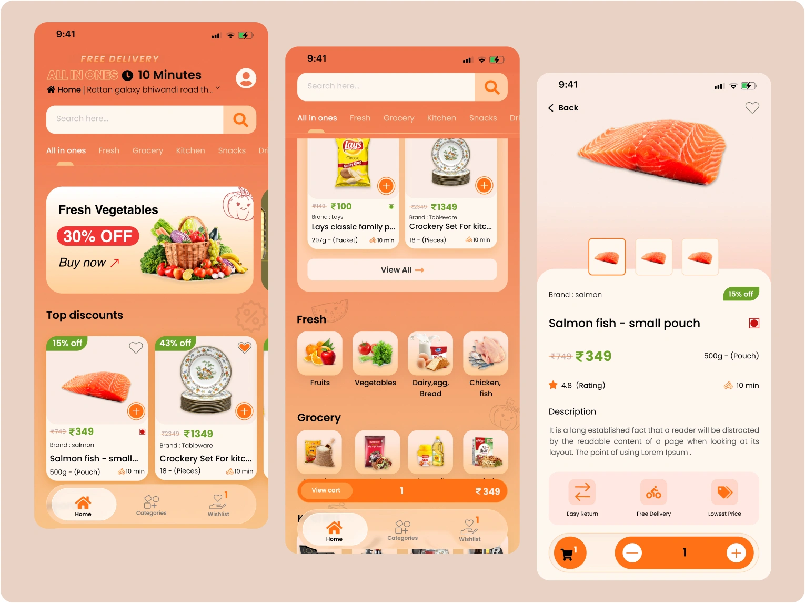

ALL IN ONES Grocery Delivery Mobile App
A modern grocery delivery mobile app designed to make everyday shopping fast, simple, and convenient. The interface focuses on quick product discovery, intuitive navigation, smooth cart interactions, and a seamless checkout experience, complemented by engaging UI animations that enhance usability and user engagement.

Project Overview
ALL IN ONES is a modern quick commerce mobile application designed to make grocery shopping fast, simple, and enjoyable. The app allows users to browse multiple product categories, discover discounts, manage their cart, and complete purchases with minimal effort. The primary goal was to reduce friction throughout the shopping journey by keeping important actions easily accessible while maintaining a clean and visually engaging interface. Rather than focusing only on groceries, the application supports multiple shopping categories including fresh produce, kitchen essentials, snacks, beverages, and household products, creating an all-in-one shopping experience.
Project Information
UI/UX Design
Quick Commerce Mobile App
Figma
Mobile Application (iOS & Android)
Design Challenge
Quick commerce apps need to present hundreds of products while keeping the interface simple enough for users to shop quickly. The challenge was to design an application that: Makes products easy to discover. Reduces the number of taps required to purchase. Keeps the shopping cart accessible at all times. Simplifies quantity management. Encourages faster checkout. Maintains a visually clean shopping experience.
User Experience Design Goals
Product Discovery
Discover products quickly.
Easy Browsing
Browse categories effortlessly.
Product Comparison
Compare products easily.
Quick Add
Add items with fewer taps.
Accessible Cart
Keep the cart accessible throughout shopping.
Smooth Checkout
Complete checkout smoothly.
Micro-interactions
Enjoy engaging micro-interactions.
Design Process
Research & Requirement Understanding
Identified user needs, shopping behavior, and quick commerce requirements to create a fast and convenient grocery shopping experience.
Information Architecture
Organized product categories, search, and navigation to help users find groceries quickly with minimal effort.
UI Design
Designed a clean, modern interface with clear product presentation, intuitive layouts, and visually engaging shopping interactions.
Interactive Prototype
Built interactive user flows to validate browsing, product selection, cart interactions, and the checkout experience.
User-Focused Shopping Experience
Refined the complete shopping journey to help users discover products quickly, add items effortlessly, and complete checkout with a smooth and engaging experience.